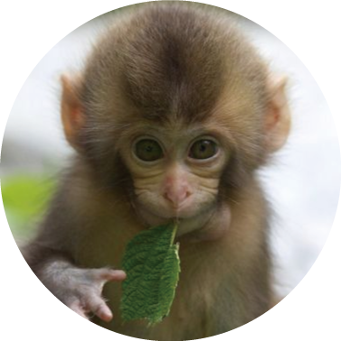

Home > Animals > Monkey
원숭이 (Monkey)
38℃~40℃
체온

2~6kg
무게
130~325회/분
심장박동
30~60회/분
호흡수
5~6년
수명
성질은 온순하나 소심하고 쉽게 흥분함, 활동적이고 호기심이 많음, 소리에 예민 물이 없으면 사료를 먹지 않음.
한 해 토끼가 실험에 사용되는 수
4만마리
현 실험 실태
토끼의 안구는 화장품에 쓰이는 안정성 테스트를 위해 안구에 화학물질을 약'3000번'의 테스트를 거치게 된다.
출처:YouTube
토끼가 실험에 쓰이는 이유
채혈에 용이
큰 귀와 굵은 혈관을 이용하여 혈관주사 및 채혈에 용이하다.
안구연구에 적합
안구의 해부학적 구조가 안구연구에 적합하다.
사육이 용이
적당한 체격으로 외과수술 등에 취급이 용이하다.